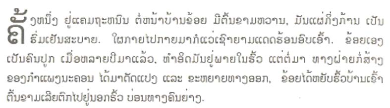
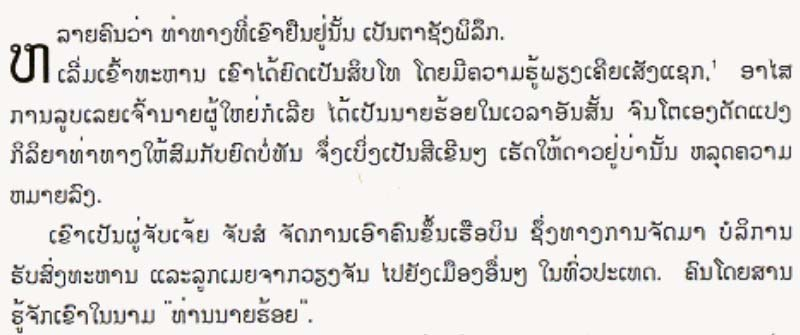
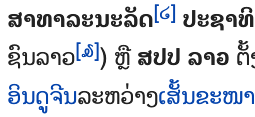

This page gathers basic information about the Lao script and its use for the Lao language. It aims (generally) to provide an overview of the orthography and typographic features, and (specifically) to advise how to write Lao using Unicode.
Phonetic transcriptions should be treated as an approximate guide, only. Many are more phonemic than phonetic, and there may be variations depending on the source of the transcription.
The Lao script is used for writing the Lao language, and is also the official script of a number of minority languages in Laos. There is a considerable Lao-speaking population in Thailand who write their language with the Thai script.
Name: ອັກສອນລາວʔáksɔ̌ːn láːw
The Lao alphabet was adapted from the Khmer script, and is a sister system to the Thai script, with which it shares many similarities and roots. However, Lao has fewer characters and is formed in a more curvilinear fashion than Thai. Further distancing from the Thai script occurred via a number of reforms. In 1975, the latest spelling reform simplified and standardised the script.
The script was originally an abugida, but since the script reforms leading up to 1960 it has been alphabetic. When the communist Pathet Lao overthrew the Lao government in 1975, they implemented a final spelling reform which simplified and standardized the script.
Observation. I'm not aware of any variant spellings or confusable characters.
Lao is an alphabet. This means that it is phonetic in nature, where each letter represents a basic sound. See the table to the right for a brief overview of features for the modern Lao orthography.
Lao text runs left to right in horizontal lines.
Spaces separate phrases, rather than words.
Each onset consonant is associated with a high, mid, or low class related to tone. Tone is indicated by a combination of the consonant class, the syllable type (checked/unchecked), plus any tone mark.
No conjuncts are used for consonant clusters, except for one subjoined consonant, used in combination only with HA..
Syllable-initial clusters and syllable-final consonant sounds are all written with ordinary consonant letters. However, because all vowels are written, it is not difficult to algorithmically detect syllable boundaries.
Unlike its close relative, Thai, the Lao orthography has no inherent vowel, but still represents vowels using 18 vowel-signs (including 5 prescripts), and 2 consonants. Only vowel-signs that appear above or below the consonant are combining marks; the others are ordinary characters that are typed in the order seen. Vowels are often written differently when they appear in a closed vs. open syllable.
There are no independent vowels, and standalone vowel sounds are written using vowel-signs applied to ອ [U+0EAD LAO LETTER O].
This page lists 27 composite vowels (made from 12 vowel-signs, and 2 consonants). Composite vowels can involve up to 4 glyphs, and glyphs can surround the base consonant(s) on up to 3 sides, eg. ເກັຍະēk̯äɲ̱a.
In character lists, show:
Character index
This section lists non-ASCII characters used for Lao, and other characters in the Lao script block not used by modern Lao language. For descriptions of usage, click on ↓.
The syllable is a basic element of the Lao language, and many words are monosyllabic. All syllables begin with a written consonant. Syllables that begin with a vowel sound are written with a silent base consonant.
The phonological structure of a syllable is (C)w?V(C).
Unlike Thai, its close neighbour linguistically, Lao doesn't naturally support onset clusters of consonants other than with ʷ, and then not before rounded vowels.wl,#Syllables Onset consonants followed by labialisation include: tʷʰ tɕʷ kʷ kʷʰ ʔʷ sʷ ŋʷ lʷ.
Only a small set of consonants occur at the end of a syllable. ʔ occurs after short vowels.
Lao also has 6 phonological tones in unchecked syllables (ie. ending in a vowel, or m, n, ŋ, w or j), and 4 in checked syllables (ie. ending in p, t, k, or ʔ).
Vowels
Dashes are used to indicate whether the character represents a vowel sound in a closed or an open syllable.
Vowel sounds
Click on the sounds to reveal locations in this document where they are mentioned.
Phones in a lighter colour are non-native or allophones.
Plain vowels
Diphthongs
Vowel signs
Unlike its close neighbour Thai, Lao consonants do not carry an inherent vowel. The short vowel a has to be written explicitly in Lao. using a vowel-sign: ະ [U+0EB0 LAO VOWEL SIGN A] in open syllables, and ັ [U+0EB1 LAO VOWEL SIGN MAI KAN] in closed syllables.
Vowel signs in Lao are a mixture of combining characters and ordinary spacing characters. Only the superscript and subscript vowel-signs are combining characters.
Prescript vowel-signs
Five vowel-signs appear to the left of the onset consonant, eg. ແມວ
.
ເ␣ແ␣ໂ␣ ␣ໄ␣ໃ
Like Thai, Lao uses a visual encoding model, so these characters are not combining characters, and are typed and stored before the base.
ະ [U+0EB0 LAO VOWEL SIGN A] and ັ [U+0EB1 LAO VOWEL SIGN MAI KAN] are both used to indicate short vowels for open and closed syllables, respectively. On their own they indicate a (which would have been the inherent vowel in the previous orthography), eg. ລະດັບ.
ຳ [U+0EB3 LAO VOWEL SIGN AM] is classed as a vowel, but also contains the final consonant m, represented by a built-in nikhahit (cf. -ໍ [U+0ECD LAO NIGGAHITA]). It is a spacing combining character.
Both of these characters also appear as a part of the complex vowels described below.
Composite vowels
All vowels represented by combinations of the above characters:
-ັຽ␣ເ-ັຍ␣ເ-ຍ␣-ິວ␣-ີວ␣ເ-ັຍະ␣ເ-ຶອ␣ເ-ືອ␣-ົວະ␣-ົວ-␣-ົວ␣ເ-ະ␣ເ-ັ␣ເ-ິ␣ເ-ີ␣ເ-ີຽ␣ເ-ີຍ␣ໂ-ະ␣ແ-ະ␣ແ-ັ␣ແ-ວ␣ເ-າະ␣-ັອ-␣-ັຍ␣-າຍ␣-າຽ␣ເ-ົາShow which combinations contain a given character:
The following list shows where vowel-signs are positioned around a base consonant to produce vowels, and how many instances of that pattern there are. Numbers after + sign indicate multiple code points.
5 prescript, eg. ໂກōk̯ (ko)
3 postscript, eg. ກາk̯ā
7 superscript, eg. ກິk̯i
2 subscript, eg. ກຸk̯u
1+6 sup+postscript, eg. ກັຍk̯äɲ̱ kaj
+3 post+postscript, eg. ກາຍk̯āɲ̱kaːj
+5 pre+postscript, eg. ເກະēk̯ake
+4 pre+superscript, eg. ເກິēk̯ikɤ
+1 super+post+post, eg. ກົວະk̯ow̱akuə
+1 pre+post+post, eg. ເກາະēk̯āakɔ
+4 pre+sup+postscript, eg. ເກົາēk̯oākaw
+2 pre+sup+post+postscript, eg. ເກັຍະēk̯äɲ̱akia
At maximum, vowel components can occur concurrently on 3 sides of the base.
Distribution of vowel elements is as follows:
-ັ -ິ -ີ -ຶ -ື -ໍ -ົ
-ຳ
ເ ແ ໂ ໃ ໄ
ະ າ ອ ວ ຍ ຽ
ຍ ຽ ະ ວ
-ຸ -ູ
Characters that don't appear in the combinations:
ຸ␣ູ␣ໃ␣ໄ␣ໍ␣ຳ
Silent vowels & consonants
Vowel absence after syllable-final consonants is not normally marked in any way. Nor is it marked in syllable-initial clusters.
໌
໌ [U+0ECC LAO CANCELLATION MARK was used to indicate silenced consonants, but Wikipedia describes it as now obsolete.wl,#Punctuation
Standalone vowels
Standalone vowels are not preceded by a consonant, and may appear at the beginning or in the middle of a word. This typically includes a way to represent the sound of the inherent vowel in isolation.
Lao uses a silent ອ [U+0EAD LAO LETTER O] as a base, to which vowel signs are applied, eg. ໂອ.
Lao has no independent vowel letters.
Vowel sounds mapped to characters
The following tables show how the above vowel sounds map to characters or sequences of characters. The dash indicates the location of the consonant relative to the vowel-sign; if there are 2 dashes, the vowel is used only in closed syllables.
ອ [U+0EAD LAO LETTER O] is silent when used as a base for vowels at the beginning of a syllable, eg. ໂອ. When it appears after a base consonant it becomes the vowel ɔː, eg. ຈອກ. It is also used in combination with other characters to produce additional vowel sounds (see composite_vowels).
The r sound
One more letter was officially removed from the alphabet by the Ministry of Education, but it is still used occasionally to transliterate Indic or other foreign words into Lao, eg. ຝຣັ່ງflaŋforeigner. It is generally used to represent the letter 'r': the sound r no longer exists in Lao.
ຣ
Consonant clusters
Phonetically, unlike Thai, Lao doesn't have syllable-initial consonant clusters other than those followed by w plus a non-rounded vowel (see structure). Those are written using an ordinary ວ [U+0EA7 LAO LETTER WO], eg. ຄວາຍ.
Otherwise, consonant letter clusters occur in the following circumstances:
Where a syllable ends with a consonant and another syllable begins. The Lao for Lao script has several syllable-final consonants: ອັກສອນລາວ.
No special characters or viramas are involved, except those described in highclass.
In a consonant cluster any tone marks or superscript vowels appear over the second consonant.
Syllable-final consonants
Lao doesn't have any code points dedicated to syllable final consonants, although consonants do appear in those positions, eg. ນົກ.
Only the following consonants appear in syllable-final position. Note how the sound may change.
ກ␣ງ␣ຍ␣ດ␣ນ␣ບ␣ມ␣ຢ␣ຣ␣ວ
Because Lao requires vowels to be written, there is not the ambiguity about syllable boundaries that one finds in Thai (caused by ambiguity about whether a consonant is syllable-final or a syllable in its own right).
Lao has 6 phonological tones in unchecked syllables, and 4 in checked syllables.
Name
Vowel
Final
Unchecked?
Checked?
Rising
˨˦ or ˨˩˦
ě
✓
High
˦
é
✓
✓
High falling
˥˧
ê
✓
Mid
˧
ē
✓
✓
Low
˩
è
✓
✓
Low falling
˧˩
e᷆
✓
✓
The tone depends on the class of the initial consonant in a syllable, the structure of the syllable, and whether or not a tone mark is applied to override the default.
Tone values vary depending on location in Laos. There is some disagreement about whether there are 5 or 6 tones in Vientiane, and the tables below show that different sources disagree on the tones produced. According to some, most dialects of Lao and Isan have six tones, those of Luang Prabang have five.wl See the section Tone values for more detailed discussion of tone values.
Tone marks
The Unicode Lao block provides the following characters for indicating tone.
່␣້␣໊␣໋
The expected typing and storage position for tone marks is immediately after the base consonant of the syllable, or after a superscript vowel-sign if there is one. However, the tone mark should be typed before ຳ [U+0EB3 LAO VOWEL SIGN AM], and should be displayed above the nikhahit, eg. ກ່ຳ.
Other letters
Two more characters have the general category of letter.
ໆ [U+0EC6 LAO KO LA] is used to indicate repetition of preceding sound. It's also used in ໆລໆkʰɯaŋ-mǎːj-lɛ-ɯːn-ɯːn (ເຄຶ່ອງໝາຍ ແລະອຶ່ນໆ), with a meaning similar to etc.
Unicode 6.1 added 2 consonant letters for Khmu.
ໞ␣ໟ
Unicode 12 added 14 consonant letters and 1 combining mark for writing Pali.
ຆ␣ຉ␣ຌ␣ຎ␣ຏ␣ຐ␣ຑ␣ຒ␣ຓ␣ຘ␣ຠ␣ຨ␣ຩ␣ຬ␣຺
Numbers, dates, currency, etc.
Digits
Lao uses Western digits.
There is, however, a set of Lao digits.
໐␣໑␣໒␣໓␣໔␣໕␣໖␣໗␣໘␣໙
Observation: Pending further clarification about how widespread the use of Lao digits is, note that Lao Wikipedia uses Lao digits for table of contents list numbering and for footnote references. See the relevant sections below.
The CLDR standard-decimal pattern is #,##0.###. The standard-percent pattern is #,##0%.cldr
Observation: Lao Wikipedia uses a French pattern, #.##0,###, eg. ມີກຳລັງຕິດຕັ້ງ 7.207,24 ເມກາວັດThere are 7,207.24 megawatts installed.
Currency
The CLDR standard format for currency is ¤#,##0.00;¤-#,##0.00, and the symbol for the Lao currency, Kip, is ₭ [U+20AD KIP SIGN].cldr
₭
Text direction
Lao text runs left to right in horizontal lines.
Glyph shaping & positioning
This section brings together information about the following topics:
writing styles;
cursive text;
context-based shaping;
context-based positioning;
baselines, line height, etc.;
font styles;
case & other character transforms.
None of the characters require special shaping based on the visual context.. Nor is printed text cursive.
Lao has no special requirements for baseline alignment between mixed scripts or in general.
The orthography has no case distinction, and no special transforms are needed to convert between characters.
Context-based positioning
Prescript vowels are visually ordered, and therefore do not need to be positioned by the font.
Vowel-signs, tones, and one consonant, on the other hand, are combining characters that need to be correctly positioned relative to the base character, and multiple marks can be combined with a single base character.
Font styles
Observation: Italicised text used for a figure captions, and also for quotations.
Structural boundaries & markers
Grapheme boundaries
tbd
Word boundaries
Words are not separated by spaces, nontheless double-clicking or other selection methods are expected to identify word boundaries. There are 2 alternative approaches for managing this.
An application uses a dictionary or smart algorithm to parse the text and determine word boundaries.
Unlike Thai or Khmer, it is fairly straightforward to parse individual syllables in Lao, because its alphabetic nature makes it possible to identify syllable-final consonants. Note that syllable-based segmentation must identify and keep together any syllable-initial clusters involving h or l, for example, the initial 2 letters in ຫມາ should wrap as a unit just like the ligated form,ໝາmā.
What about kw etc?
While nearly all syllables can be argued to be words in their own right, there is still a preference for keeping multi-syllabic words together (eg. ປະເທດ) during word-based segmentation. For this, an application needs to use a dictionary to parse Lao text.
However, widely used software automatically inserts [U+200B ZERO WIDTH SPACE] (ZWSP) in Lao text at word or syllable boundaries, and many web pages use such inserted ZWSP characters to get browsers to wrap correctly.g3,#issuecomment-385847864
If a dictionary fails to keep two or more syllables together as needed, it should be possible to use the Unicode character U+2060 WORD JOINER between the two syllables. This is an invisible character, equivalent to a zero-width no-break space, and used to prevent line-breaks.
If dictionaries are used for segmentation, they should be selected based on the language, not the script. (See the list of languages using the Lao script.)
Spaces are used, but represent phrase or sentence boundaries.
Numbers are also normally surrounded by spaces.
In principle, periods are not used, though this appears to be changing.wl,#Punctuation
Observation: Lao Wikipedia uses periods at the end of sentences, and commas (see an example).l An online news site also consistently uses periods to end sentences.
Western punctuation is also used. Contemporary writing may include punctuation marks borrowed from French, such as the exclamation mark (!), and question mark (?). However, questions can be determined by question words within a sentence.wl,#Punctuation
Hyphens are also commonly found in modern writing.wl,#Punctuation
The default quote marks for Lao are “ [U+201C LEFT DOUBLE QUOTATION MARK] at the start, and ” [U+201D RIGHT DOUBLE QUOTATION MARK] at the end.cldr
When an additional quote is embedded within the first, the quote marks are ‘ [U+2018 LEFT SINGLE QUOTATION MARK] and ’ [U+2019 RIGHT SINGLE QUOTATION MARK].cldr
ໆ [U+0EC6 LAO KO LA] is used to indicate repetition of preceding sound.
It is also used in ໆລໆkʰɯaŋ-mǎːj-lɛ-ɯːn-ɯːn (ເຄຶ່ອງໝາຍ ແລະອຶ່ນໆ), with a meaning similar to etc. For example, ການສື່ສານ,ສື່ມວນຊົນ,ສື່ໂຄສະນາ...ໆລໆCommunication, media, advertising ... etc.
Some sources use ຯລຯ and others ໆລໆ – check this out.
Observation: Lao Wikipedia uses periods after date-related abbreviations, eg. in ຄ.ສ. 1935 ສະບັບຄົ້ນḵʰ.s. 1935 sab̯äb̯ḵʰo²ṉCE 1935 Edition.l It is also used in the abbreviated name of the country, eg. ສ.ປ.ປ.ລາວs.p̯.p̯.ḻāw̱Lao PDR.
Inline notes & annotations
tbd
Other inline ranges
tbd
Other punctuation
tbd
Line & paragraph layout
Line-breaking & hyphenation
Although Lao doesn't use spaces or dividers between words, the expectation is that line-breaks occur at word boundaries. See word for a discussion of issues related to word-based segmentation.
Character properties.
Characters used for the Lao language have the following assignments related to line-break properties.
B2 (break opportunity before and after) the EM DASH used to set off parenthetical text may allow line breaks before or after, but may also be affected by local orthographic rules.
BA (break after) indicates that it is normal to break after that character.
CP (closing parenthesis) will not cause a break opportunity when appearing in contexts like “(s)he.” In all other respects the breaking behavior of CP and CL are the same.
GL (non-breaking “glue") non-tailorable, non-breaking characters prohibit breaks on either side, but that prohibition can be overridden by SP or ZW.
IN (inseparable characters) is intended to be used consecutively. There is never a line break between two characters of this class.
NU (number) behaves like ordinary characters (AL) in the context of most characters but activate the prefix and postfix behavior of prefix and postfix characters.
OP (open punctuation) should be kept with the character that follows. This is desirable, even if there are intervening space characters, as it prevents the appearance of a bare opening punctuation mark at the end of a line.
PO (postfix numeric) usually follows a numerical expression and may not be separated from preceding numeric characters or preceding closing characters, even if one or more space characters intervene. For example, there is no break opportunity in “(12.00) %”..
PR (numeric prefix) may not be separated from following numeric characters or following opening characters, even if a space character intervenes. For example, there is no break opportunity in “฿ (100.00)”.
QU (quotation) characters can be opening or closing, or even both, depending on usage. The default is to treat them as both opening and closing.
SA (Southeast Asian) require morphological analysis to determine break opportunities, in a way similar to a hyphenation algorithm. No break opportunities will be found otherwise. Complex context analysis, often involving dictionary lookup of some form, is required to determine non-emergency line breaks. If such analysis is not available, it is recommended to treat them as AL.
ZW (ZERO WIDTH SPACE, ZWSP) enables invisible break opportunities wherever SPACE cannot be used. It has no width, and is treated as if it wasn't there during justification.
Text alignment & justification
Since spaces aren't used to separate words, Lao has to use alternative strategies for justification of text.
The following shows how your browser justifies text.
The lao numeric style for Lao is decimal-based and uses the digits below.
໐␣໑␣໒␣໓␣໔␣໕␣໖␣໗␣໘␣໙
Observation: Lao Wikipedia uses periods for suffixes.l The use of these counters in Wikipedia implies that they are common in contemporary Lao texts.
Lao digits being used for section numbering in Wikipedia.
Styling initials
It is possible to find the first letter in a paragraph styled so that it is larger and sits alongside several lines of the continuing paragraph text.
Observation: All combining characters, including spacing ones, are included in the selections shown in fig_drop_caps.
Any punctuation such as opening quotes and opening parentheses should also be included in the initial styling. ?

Two example paragraphs showing dropped highlighted initials with combining characters.
Observation: In the figures shown, the alphabetic baseline of the highlighted letter(s) matches the bottom of the row that determines the size of the highlighted letter(s). Selections without diacritics above are somewhat shorter than the height of the lines alongside, whereas selections with multiple diacritics rise slightly higher than the first line of text.
Observation: In fig_drop_caps_2, the selection picks out only ຫ from the digraph ຫລ; and ເ from the syllable ເມຶ່ອ.

More example paragraphs, showing dropped highlighted initials that are part of a larger construct.
Page & book layout
This section is for any features that are specific to Lao and that relate to the following topics:
general page layout & progression;
grids & tables;
notes, footnotes, etc;
forms & user interaction;
page numbering, running headers, etc.
Notes, footnotes, etc
Observation: Lao Wikipedia uses Lao digits for footnote references.

Footnote references in Wikipedia using Lao digits.
Character lists
Version 12.0 of the Unicode Standard has the following block dedicated to the Lao script (numbers in lists are non-ASCII only):
According to ScriptSource, the Lao script is used for the following languages:
Bru, Eastern [bru]
Hmong Daw [mww]
Mien, Iu [ium]
Jeh [jeh]
Kataang [kgd]
Khmu [kjg]
Kriang [ngt]
Kuy [kdt]
Lamet [lbn]
Lao [lao]
Lave [brb]
Ta'oih, Lower [tto]
Katang, Northern [ncq]
Pacoh [pac]
Phunoi [pho]
Sô [sss]
Tai Dam [blt]
Ta'oih, Upper [tth]
Bru, Western [brv]
Katu, Western [kuf]
Tone values
The following tables present different descriptions of tone values in Lao for the Vientiane dialect. The first and third tables basically agree on the tone value, although the names of tones vary. The middle table shows some different tone values altogether. See a list of studies for Vientiane tones.
This diagram shows 5 tones with names corresponding to a mixture of the first two tables below.
Tone marks are normally used only on open syllables, and modify the default tone value. Two of the four tone marks are only used with Class 1 consonants. Tone marks tend to be placed directly over the consonant (or superscript vowel), unlike Thai which tends to place them slightly to the right.
Open or live syllables are those that end with a long vowel or sonorant (eg. ງນມຍວ). Closed or dead syllables end with a stop consonant (eg. ກດບ) or short vowel.
The Simmala chart seems suspect to me, since they say in the text that the rising tone doesn't occur in dead syllables, and the book has examples of dead syllables with long vowels with a low tone.